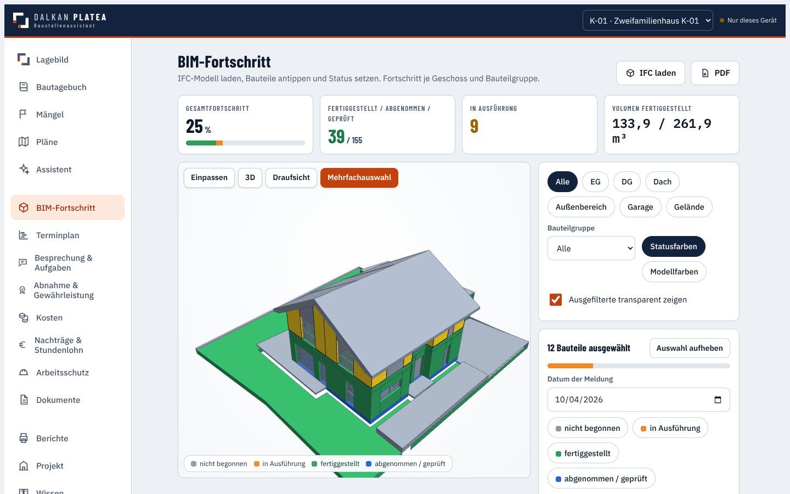
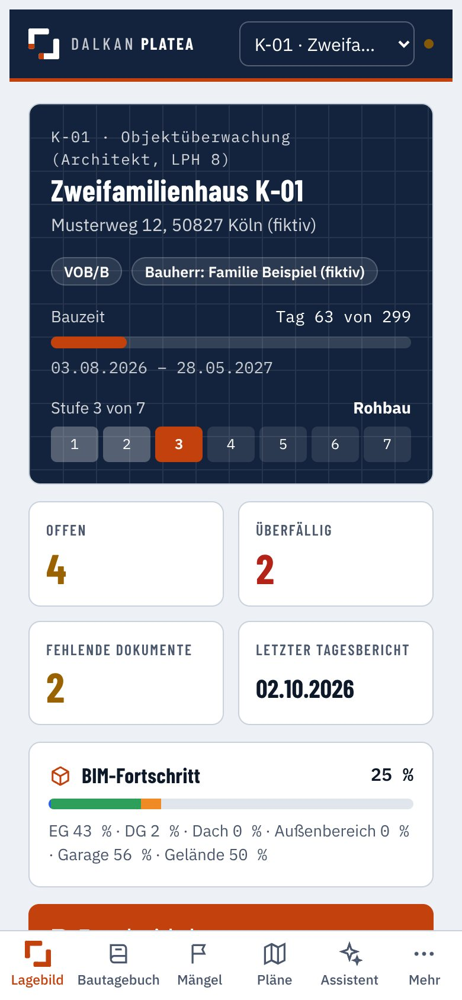
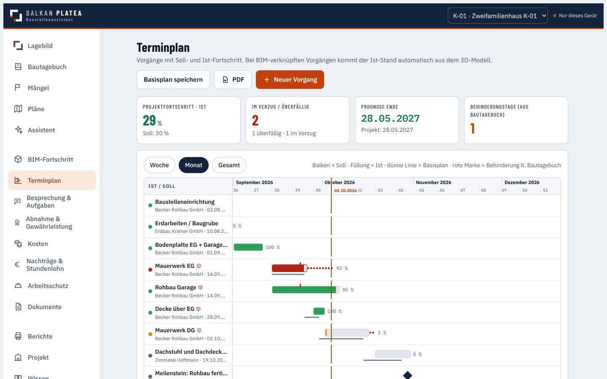
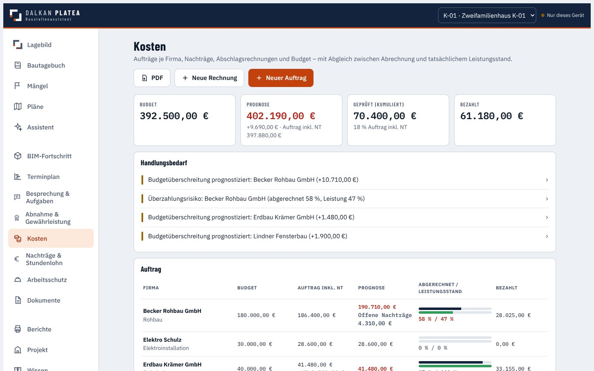
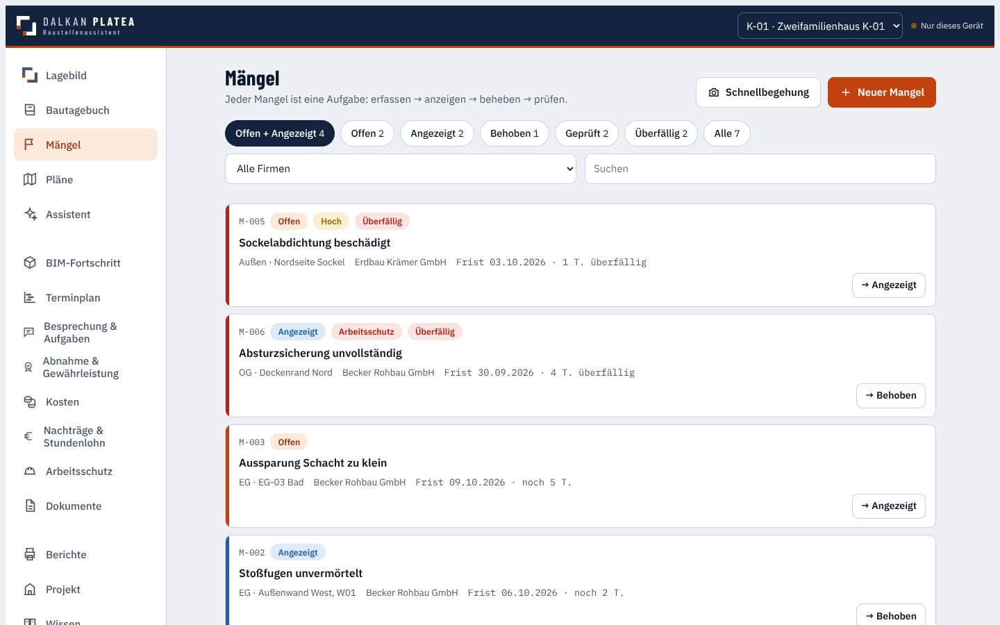
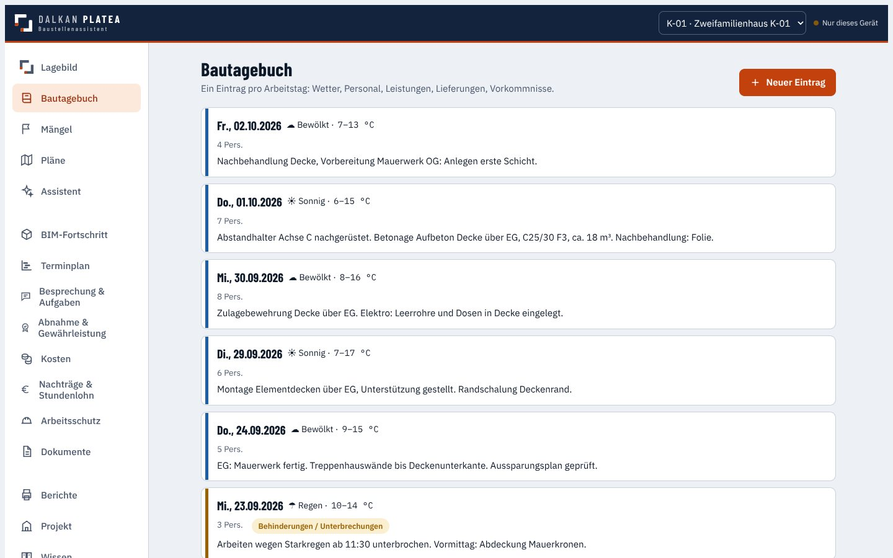

Auf einer Baustelle passiert jeden Tag viel – und später erinnert sich jeder anders. Dalkan Platea hält fest, was wirklich war: Fotos, Mängel, Fortschritt, Termine und Kosten. In einer App, auf dem Tablet, direkt vor Ort.A lot happens on a building site every day – and later everyone remembers it differently. Dalkan Platea records what really happened: photos, defects, progress, schedule and costs. In one app, on the tablet, right on site.
Demo mit fiktiver Musterbaustelle. Keine Anmeldung, Daten bleiben im eigenen Browser.Demo with a fictional sample site. No sign-up, data stays in your own browser.


Entstanden aus dem Alltag auf der Baustelle: Was dort passiert, wird dort erfasst – und steht sofort im Bericht.Born from everyday site work: what happens on site is recorded on site – and is in the report straight away.
Das Gebäude erscheint als 3D-Modell im Browser. Jedes Bauteil zeigt seine Farbe: grau geplant, orange in Arbeit, grün fertig. So sieht auch jemand ohne Baustellenerfahrung sofort, wie weit der Bau ist.The building appears as a 3D model in the browser. Every part shows its colour: grey planned, orange in progress, green done. Even someone without site experience sees at once how far the building has come.
Der Terminplan vergleicht, was bis heute fertig sein sollte, mit dem, was tatsächlich fertig ist – und zeigt, wann der Bau voraussichtlich endet.The schedule compares what should be done by today with what actually is – and shows when the building is likely to be finished.

Rechnungen der Firmen werden mit dem echten Baufortschritt verglichen. Verlangt eine Firma mehr, als sie gebaut hat, schlägt die App Alarm.Contractors’ invoices are compared with real progress on site. If a company bills more than it has built, the app raises an alert.

Foto machen, auf dem Plan markieren, Frist setzen. Das passende Schreiben an die Firma entsteht mit einem Klick – und die App erinnert, wenn die Frist abläuft.Take a photo, mark it on the plan, set a deadline. The letter to the company is created in one click – and the app reminds you when the deadline runs out.

Wetter, wer war da, was wurde gebaut, was wurde geliefert. Abends steht der Tag fertig im Bericht.Weather, who was there, what was built, what was delivered. By evening the day is in the report.

Übergabe sauber protokolliert, Gewährleistung im Blick.Handover properly recorded, warranty tracked.
Was zusätzlich beauftragt wurde – und was es kostet.What was ordered on top – and what it costs.
Regelmäßige Sicherheitsrundgänge auf der Baustelle.Regular safety walks on site.
Immer der aktuelle Plan, mit markierten Stellen.Always the current drawing, with marked spots.
Aus offenen Punkten werden Aufgaben mit Termin.Open points become tasks with a date.
In der Vollversion hilft eine KI beim Formulieren und Nachfassen.In the full version an AI helps with writing and follow-ups.
Platea ist der offene Platz der römischen Stadt – die Baustelle. Atrium ist der Innenhof des Hauses – das Büro. Beide teilen dieselben Daten.Platea is the open square of the Roman town – the site. Atrium is the inner courtyard of the house – the office. Both share the same data.
Für die Baustelle: erfassen, prüfen, dokumentieren.For the site: record, check, document.
Demo verfügbarDemo availableFür das Büro: Ausschreibung, Vergabe, Termine und Kosten planen.For the office: tendering, award, planning schedule and costs.
in Entwicklungin developmentIch bin Architekt und arbeite an der Schnittstelle zwischen Planung und Baustelle. Dalkan Platea ist mein eigenes Werkzeug: Es bildet die Bauleitung so ab, wie ich sie verstehe – damit nichts verloren geht und jeder auf der Baustelle denselben Stand kennt.I am an architect working at the interface between design and construction site. Dalkan Platea is my own tool: it reflects site management as I understand it – so nothing gets lost and everyone on site knows the same facts.
Konzept, Fachinhalte und Gestaltung stammen von mir; bei der Programmierung hat mich Claude (Anthropic) als KI-Werkzeug unterstützt.Concept, domain content and design are my own; Claude (Anthropic) supported me as an AI tool in programming.
Musterbaustelle K-01 mit 3D-Modell, Mängeln, Terminplan und Kosten. Am besten auf Tablet oder Laptop.Sample site K-01 with 3D model, defects, schedule and costs. Best on tablet or laptop.